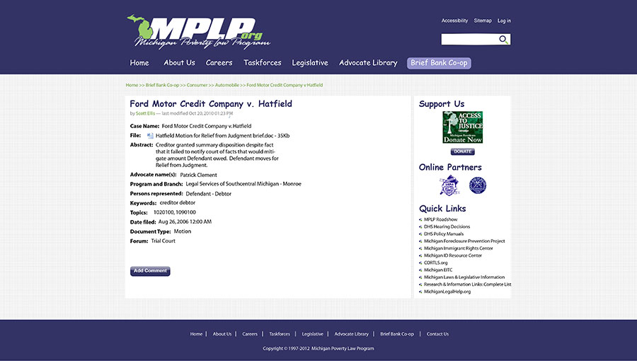

I am currently an intern at Michigan Poverty Law Program (MPLP). MPLP is a cooperative effort of Legal Services of South Central Michigan and the University of Michigan Law School. MPLP provides state support services to local legal aid programs and other poverty law advocates.
I have five main responsibilities there: graphic design, web development, web content development, testing, and Drupal Modules updating and testing.
One of my tasks in MPLP is graphic design, including logos, images for different social media, websites and so forth. The images below are some of my work examples.
MPLP has launched a companion site MichiganLegalHelp.org, providing legal information and resources for Michigan residents who are representing themselves in civil legal matters. Since the site is newly lauched, we need to migrate the content from the old site to it and tailor the content to match the need of the new system. What I am doing is uploading different content types to the system, including Articles, Checklist, FAQ, ect., and running quality assurance protocols to ensure that all information on the website is accurate.
LawHelp Interactive uses automated online interviews to help residents who represent themselves to prepare documents they need to file a case. I am responsible for testing these interviews to make sure they work as the way they should do.